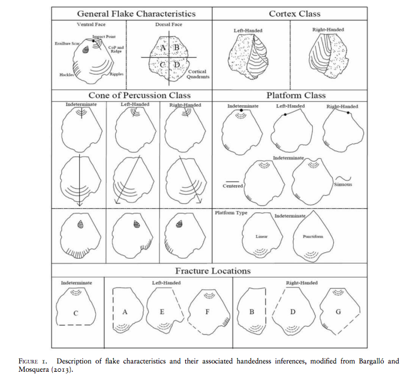
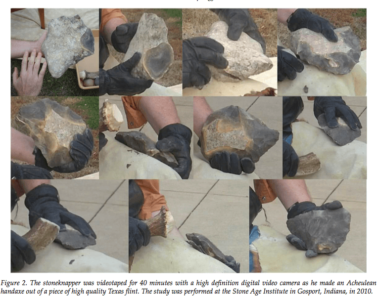
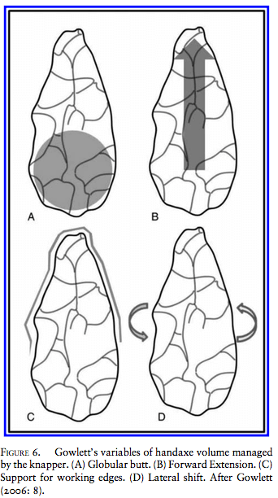
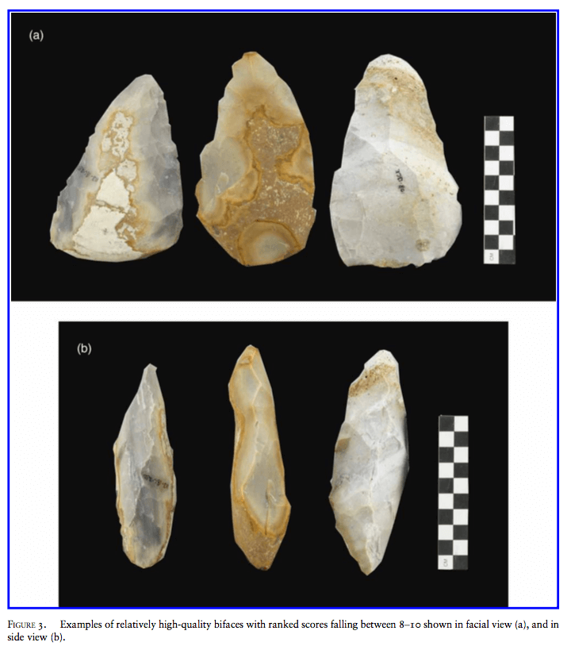
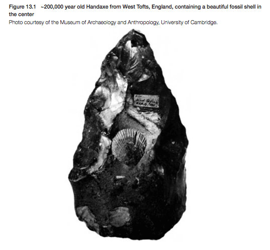
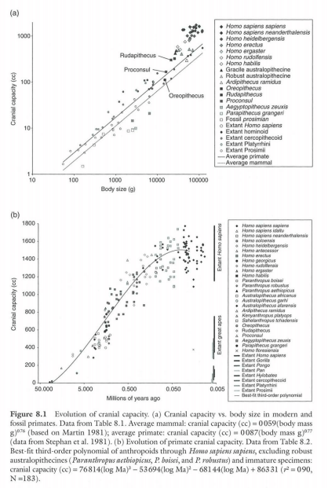
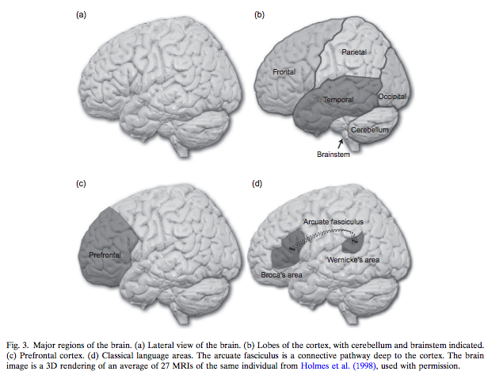

Our Research
Authors - Lana Ruck, Douglas C. Broadfield, and Clifford T. Brown
Publication Year - 2015
 Publication Year - 2015
Handedness is inextricably linked to brain lateralization and language in humans, and identifying handedness in the
paleo-archaeological record is important for understanding hominid cognitive evolution. This study reports on
experiments for identifying knapper handedness in lithic debitage using three previously established methods:
Toth (1985), Rugg and Mullane (2001), and Bargalló and Mosquera (2013). A blind study was conducted on
lithic debitage (n = 631) from Acheulean handaxes (n = 10) created by right- and left-handed subjects. Blinded hand-
edness predictions for flakes were compared to their true handedness in order to assess each method’s reliability. In
order to test replicability, multiple observers classified a sample of flakes and inter-observer agreement was assessed.
None of the methods were better than chance in predictive accuracy, and there were significant issues with inter-
observer agreement. This study suggests that identifying knapper handedness in lithic debitage is extremely
difficult, but also that some existing methodological issues may have simple solutions; suggestions for future
research on this topic are provided.
Read the paper here
From the Journal/Book - Lithic Technology
Read the paper here
From the Journal/Book - Lithic Technology
Author - Robert Allen Mahaney
Publication Year - 2014
 Publication Year - 2014
The intuition that there is a homology between sequenced action during stoneknapping and syntax in language
is long-standing, but rarely explicitly analyzed. If valid, this proposed homology would allow paleoanthropologists to gain a handle on the timing and context of language emergence. Here, I present the results of three pilot
studies performed to explore the methods such an analysis would require, as well as the issues that such an
analysis would raise. The replication of an Acheulean handaxe was videotaped, then coded. This lithic reduction
was analyzed using information theory, formal grammars, and Markov models. These three analyses found: (1)
in terms of information entropy, the thinning phase of handaxe manufacture is as complex as many English language utterances; (2) the lithic reduction can be represented as a Context-Free Grammar (CFG), though in reality
it only has limited embedding and is largely iterative in structure; and, (3) the lithic reduction also can be simulated by ‘mindless’ Markov models. These results raise a number of issues. First, it is not clear how to define and
validate comparable units in stoneknapping and language. It is also not clear that the flow of actions performed
by a stoneknapper can be easily segmented into discrete units. Second, in Studies One and Two, it was found that
handaxe replication could be simulated by both a CFG and a Markov model instantiating a Finite State Grammar.
The types of cognitive mechanisms capable of instantiating these are significantly different, with a CFG requiring
memory resources not needed by the simpler Markov processes. These pilot studies indicate that it is possible to
utilize these methods in the analysis of stoneknapping, but a number of basic conceptual and methodological issues remain to be clarified.
Read the paper here
From the Journal/Book - PaleoAnthropology
Read the paper here
From the Journal/Book - PaleoAnthropology
Author - Robert Allen Mahaney
Publication Year - 2014
 Publication Year - 2014
Research into the cognitive foundations of lithic technology has been increasingly prolific and productive over the
last 30 years. However, Evolutionary Cognitive Archaeology (ECA) lacks an explicit theoretical framework. In this
paper, I selectively review past work and propose a theoretical framework to open discussion amongst researchers.
First, I distinguish between the two components of cognition: knowledge and the intelligent systems that make that
knowledge possible. The chaîne opératoire approach provides a powerful method for describing and analyzing
technical knowledge. Thomas Wynn’s (1993) three-layer model of tool behavior provides a useful heuristic for
organizing research into the underlying neurocognitive processes that make technical knowledge possible. Contemporary work by Wynn, Gowlett, Bril, Moore, Stout, and Uomini are placed within this framework. Notable
findings are reviewed to describe the current state of knowledge in ECA. Without an adequate theoretical framework, ECA will continue to produce intriguing results without relating them to each other. It will also lack a
medium within which to pose and resolve theoretical and empirical debates.
Read the paper here
From the Journal/Book - Lithic Technology
Read the paper here
From the Journal/Book - Lithic Technology
Author - Shelby S. Putt, Alexander D. Woods and Robert G. Franciscus
Publication Year - 2014
 Publication Year - 2014
Many researchers have hypothesized an analogous, and possibly evolutionary, relationship between Paleolithic
stone tool manufacture and language. This study uses a unique design to investigate how spoken language may
affect the transmission of learning to make stone tools and comes to surprising results that may have important
implications for our views of this relationship. We conducted an experiment to test the effect of verbal communication on large core biface manufacture during the earliest stages of learning. Previously untrained flintknappers
were assigned to two different communication conditions, one with and one without spoken language, and were
instructed to replicate the bifaces produced by the same instructor. The attempted bifaces (total = 334) from the
two groups were compared using an Elliptical Fourier analysis, the Flip Test, and a rating scale by an independent
lithicist. We found no significant difference in the overall shape, symmetry, or other measures of skill among the two
groups, using all three of these methods. Analysis of the 18,149 debitage elements from the experiment, however,
revealed that the two groups set up their striking platforms in fundamentally different ways. The nonverbal group
produced more efficient flakes than the verbal group, as evidenced by the significantly higher ratios of platform
width to platform thickness and size to mass of the nonverbal subjects’ flakes. These results indicate that verbal
interaction is not a necessary component of the transmission of the overall shape, form, and symmetry of a
biface in modern human novice subjects, and it can hinder the progress of verbal learners because of their tendency
to over-imitate actions of the instructor that exceed their current skill set.
Read the paper here
From the Journal/Book - Lithic Technology
Read the paper here
From the Journal/Book - Lithic Technology
Author - Lana Ruck
Publication Year - 2014
Publication Year - 2014
Alternative functions of the left-hemisphere dominant Broca’s region have induced hypotheses regarding
the evolutionary parallels between manual praxis and language in humans. Many recent studies on Broca’s area reveal several assumptions about the cognitive mechanisms that underlie both functions,
including: (1) an accurate, finely controlled body schema, (2) increasing syntactical abilities, particularly
for goal-oriented actions, and (3) bilaterality and fronto-parietal connectivity. Although these characteristics are supported by experimental paradigms, many researchers have failed to acknowledge a major
line of evidence for the evolutionary development of these traits: stone tools. The neuroscience of stone
tool manufacture is a viable proxy for understanding evolutionary aspects of manual praxis and language,
and may provide key information for evaluating competing hypotheses on the co-evolution of these cognitive domains in our species.
Read the paper here
From the Journal/Book - Brain & Language
Read the paper here
From the Journal/Book - Brain & Language
Author - P. Thomas Schoenemann
Publication Year - 2013
 Publication Year - 2013
Because language is one of the defining characteristics of the human condition, the
origin of language constitutes one of the central and critical questions surrounding the
evolution of our species. Principles of behavioral evolution derived from evolutionary
biology place various constraints on the likely scenarios that should be entertained.
The most important principle is that evolution proceeds by modifying pre-existing
mechanisms whenever possible, rather than by creating whole new mechanisms from
scratch. Another is that flexible non-genetic behavioral change drives, at each step, later
genetic adaptation in the direction of that behavior. A model of language origins and
evolution consistent with these principles suggests that increasing conceptual complexity
of our ancestors—played out in the context of an increasingly socially interactive
existence dominated by learned behavior—drove the elaboration of communications
systems in our lineage. Empirical attempts to date the origin of important aspects
of language hinge on key assumptions about how language and material culture are
connected, or the relationships between anatomy, brain, and behavior. On the whole,
the evidence suggests a very ancient origin of significantly enhanced communication,
though exactly when this would have been identifiable to modern linguists as ‘language’
is unclear. It would appear that some critical components of language date back to the
emergence of the genus Homo, with other component shaving an even deeper ancestry.
Read the paper here
From the Journal/Book - Eastward Flows the Great River: Festschrift in Honor of Prof. William S-Y. Wang’s 80th Birthday
Read the paper here
From the Journal/Book - Eastward Flows the Great River: Festschrift in Honor of Prof. William S-Y. Wang’s 80th Birthday
Author - P Thomas Schoenemann
Publication Year - 2013
 Publication Year - 2013
Understanding brain evolution involves identifying both the physical changes that
occurred, as well as understanding the reasons for these changes. There are two ways
in which inferences about evolutionary changes are made. By comparing a species of
interest against other modern species, one can determine what exactly is different, and
in what way it is different. By studying the fossil record , one assesses the time-course
of evolutionary changes. Both of these approaches have strengths and weaknesses.
Significantly more data are available from modern forms, both in terms of the number
of species one can assess and the specific details and subtleties of the adaptations stud-
ied, parts of the brain, connectivity between regions, neurotransmitter systems, cyto-
architecture, integrated functioning, and so forth. However, one cannot unequivocally
reconstruct the common ancestral states with this method because modern forms are
themselves the end-products of separate evolutionary lineages. In some cases it appears
that many lineages have evolved in parallel from a commo n ancestor different from
any living species. In addition, one cannot determine the time-course of evolutionary
change from a comparative analysis of the anatomy alone. For this, one needs the
fossil record . The time-course may hold clues about the functional significance of
brain evolution, depending on the timing and sequence of other features or factors
tl1at might be related to brain evolution (e.g., climate, technological, and biological
changes). However, fossil data on brain evolution are limited, since brains themselves
do not fossilize, leaving us with only their surrounding braincases (if we are even that
lucky). Thus, both approaches, comparing modern species and assessing fossil
evidence, are essential. Since there was one actual evolutionary history, our inferences
about what happened - however derived- should all point towards the same conclusions if we are truly on the right track (Vincent Sarich, personal communication).
Read the paper here
From the Journal/Book - A Companion to Paleoanthropology
Read the paper here
From the Journal/Book - A Companion to Paleoanthropology
Author - P. Thomas Schoenemann
Publication Year - 2012
 Publication Year - 2012
In this chapter evolutionary changes in the human brain that are relevant to language are
reviewed. Most of what is known involves assessments of the relative sizes of brain regions. Overall
brain size is associated with some key behavioral features relevant to language, including complexity
of the social environment and the degree of conceptual complexity. Prefrontal cortical and temporal
lobe areas relevant to language appear to have increased disproportionately. Areas relevant to
language production and perception have changed less dramatically. The extent to which these
changes were a consequence specifically of language versus other behavioral adaptations is a good
question, but the process may best be viewed as a complex adaptive system, whereby cultural learning
interacts with biology iteratively over time to produce language. Overall, language appears to have
adapted to the human brain more so than the reverse.
Read the paper here
From the Journal/Book - Progress in Brain Research: Evolution of the Primate Brain from Neuron to Behavior
Read the paper here
From the Journal/Book - Progress in Brain Research: Evolution of the Primate Brain from Neuron to Behavior
Latest News

Human Cognitive Evolution course at King Abdullah University...read more

Dr. Colin Allen to discuss the evolution of expertise...read more

Dr. Peter Todd to discuss information exploitation strategies
...read more

What does it mean to have a belief?
read more
read more

How do apes communicate?read more

Cognitive neuroscience of stone tool manufacturing...read more